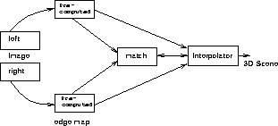

Figure 7: The precomputed edge integration model
In this integration model the precomputed edge module has feedforward (weak) interaction with the matching module as well as the interpolation module. On the other hand there is strong interaction between the matching module and the interpolation module. We use the difference image to calculate the precomputed line fields (see (6)) because the difference field is obtained as a byproduct while obtaining images at different resolutions and the fact that computing line fields from the difference field is computationally simple unlike other edge detectors, for example the Canny edge detector.